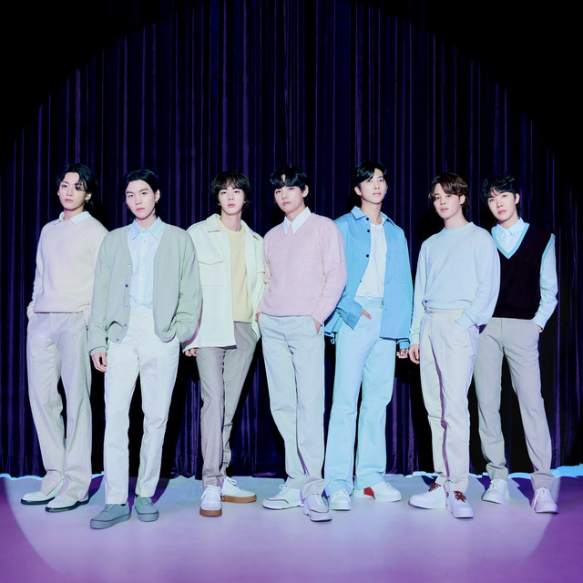

Bio
BTS debuted in 2013, June 12th from a company called HYBE. The company at the time was going bankrupted and this group was there last effort before they had to close for good. Litte did they know how much BTS would be able to not only save HYBE but achieve so much more. The full name of the band is Bangtan Boys but now they just refer to themselves as BTS. Each member joined at different times but it was RM who really started the group since he was at HYBE the longest and he wanted to start the group to help HYBE instead of becoming a solo rapper.
Achievements
Billboard achievements
BTS has hit the billboard with 8 No.1 hits and 7 No.1 albums. They have currently the holding record of 42 No.1 hits and have topped the charts each year since their debut in 2013 excpet for when they took their break for 2 years.
Going to the White House
In 2022 BTS also got the honor of going to the white house to talk about Asian Inclusivity and also about discrimination as well since hate crimes were increasing during this time.